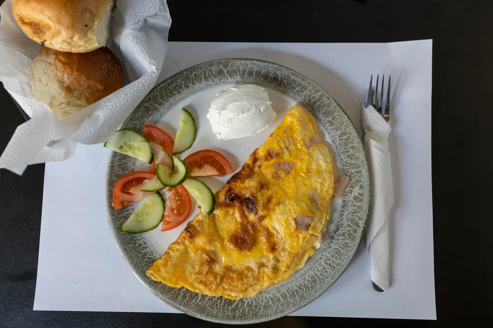

Reyn's Tasty Omlette with Cucumbers

Ingredients
- 2 eggs
- 3-4 tbsp olive oil
- 50 g sirene (Lacrima/Vereya/Sayana), crumbled
- 50 g kashkaval (Sayana/Vereya)
- A pinch of salt
- 1 medium cucumber
- Juice of ½ lemon
Steps for the omlette
-
Crack the eggs into a bowl, whisk them lightly with a fork until smooth.
- Heat the olive oil in a non-stick pan over medium heat.
- Sprinkle the crumbled sirene and kashkaval evenly over the eggs.
- Cook for 2–3 minutes, then gently fold the omelette in half.
-
Continue cooking until the cheese is melted and the omelette is cooked
through but still soft inside.
- Serve warm.
Steps for the salad
- Wash and slice the cucumbers (thin rounds).
- Place them in a bowl.
- Sprinkle with a pinch of salt.
- Squeeze fresh lemon juice over and then drizzle with olive oil.
- Toss gently and serve chilled or at room temperature.
Home